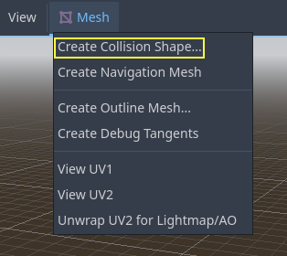
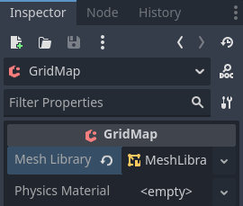
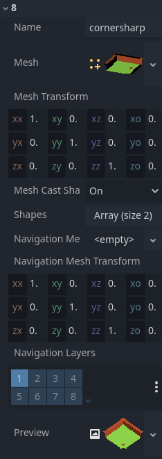
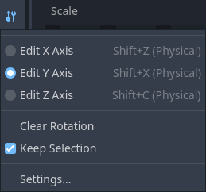

Sử dụng GridMap
Giới thiệu
Gridmap là công cụ để tạo màn chơi 3D, tương tự cách TileMap hoạt động trong 2D. Bạn bắt đầu với một bộ sưu tập mesh 3D định sẵn (một class_MeshLibrary) có thể đặt trên lưới, như thể bạn đang xây màn chơi bằng vô số khối Lego.
Bạn cũng có thể thêm va chạm và điều hướng (navigation) vào các mesh, giống như với các tile của một tilemap.
Dự án ví dụ
Để tìm hiểu cách GridMap hoạt động, hãy bắt đầu bằng việc tải dự án mẫu: gridmap_starter.zip.
Giải nén dự án này và thêm nó vào Project Manager bằng nút "Import". Bạn có thể nhận được một popup cho biết dự án cần được chuyển đổi sang phiên bản Godot mới hơn, hãy nhấn Convert project.godot.
Tạo MeshLibrary
Để bắt đầu, bạn cần một class_MeshLibrary, là tập hợp các mesh riêng lẻ có thể dùng trong gridmap. Mở scene "mesh_library_source.tscn" để xem ví dụ về cách thiết lập mesh library.

Như bạn thấy, scene này có một node class_Node3D làm gốc, và một số node con class_MeshInstance3D.
Nếu bạn không cần vật lý trong scene thì đã xong. Tuy nhiên, trong hầu hết trường hợp bạn sẽ muốn gán collision body cho các mesh.
Va chạm
Bạn có thể gán thủ công một class_StaticBody3D và class_CollisionShape3D cho mỗi mesh. Ngoài ra, bạn có thể dùng menu "Mesh" để tự động tạo collision body dựa trên dữ liệu mesh.

Lưu ý rằng collision body "Convex" sẽ hoạt động tốt hơn với các mesh đơn giản. Với các hình dạng phức tạp hơn, hãy chọn "Create Trimesh Static Body". Khi mỗi mesh đã được gán physics body và collision shape, mesh library của bạn đã sẵn sàng để sử dụng.

Material
Chỉ các material nằm trong mesh được dùng khi tạo mesh library. Material đặt trên node sẽ bị bỏ qua.
NavigationMesh
Giống như mọi mesh instance, các mục của MeshLibrary có thể được gán một resource class_NavigationMesh, có thể tạo thủ công hoặc bake như mô tả bên dưới.
Để tạo NavigationMesh từ việc export scene MeshLibrary, hãy đặt một node con class_NavigationRegion3D bên dưới MeshInstance3D chính của mục GridMap. Thêm một resource NavigationMesh hợp lệ vào NavigationRegion3D cùng một số node hình học nguồn bên dưới, rồi bake NavigationMesh.
Ghi chú
Với các ô lưới nhỏ, thường cần giảm các thuộc tính agent radius và region minimum size của NavigationMesh.

Các node bên dưới NavigationRegion3D bị bỏ qua khi export scene MeshLibrary, nên có thể thêm các node bổ sung làm hình học nguồn chỉ để bake navmesh.
Cảnh báo
Kích thước ô khi bake của NavigationMesh phải khớp với kích thước ô của map NavigationServer để hợp nhất đúng các navigation mesh của các ô lưới khác nhau.
Lightmap
Bạn có thể bake lightmap lên GridMap. Dữ liệu UV2 cho lightmap sẽ được dùng lại từ mesh nếu đã có. Nếu chưa có dữ liệu UV2, nó sẽ được tự động tạo khi bake với kích thước texel lightmap là 0.1 đơn vị. Để tạo dữ liệu UV2 với kích thước texel lightmap khác, bạn có thể đặt chế độ global illumination trong Import dock thành Static Lightmaps và chỉ định kích thước texel ở đó. Tùy chọn này phải được thay đổi trước khi scene được chuyển đổi thành MeshLibrary, vì thay đổi sau đó sẽ không ảnh hưởng đến dữ liệu MeshLibrary hiện có.
Ngoài điểm đặc thù này, quy trình bake lightmap giống như với bất kỳ scene 3D nào khác. Xem Dùng chiếu sáng toàn cục bằng lightmap để biết thêm thông tin về bake lightmap.
Định dạng MeshLibrary
Tóm tắt các ràng buộc cụ thể của định dạng MeshLibrary: một scene MeshLibrary có Node3D làm node gốc, và nhiều node con sẽ trở thành các mục MeshLibrary. Mỗi node con của node gốc nên:
Là một class_MeshInstance3D, sẽ trở thành mục MeshLibrary. Chỉ mesh hiển thị này được export.
Có material trong ô material của mesh, không phải trong các ô material của MeshInstance3D.
Có tối đa một node con class_StaticBody3D cho va chạm. StaticBody3D nên có một hoặc nhiều node con class_CollisionShape3D.
Có tối đa một node con class_NavigationRegion3D cho điều hướng. NavigationRegion3D có thể có thêm một hoặc nhiều node con class_MeshInstance3D, có thể được bake cho điều hướng nhưng sẽ không được export như mesh hiển thị.
Chỉ định dạng cụ thể này được nhận diện. Các loại node khác đặt làm node con sẽ không được nhận diện và export. GridMap không phải là hệ thống đa năng để đặt node lên lưới, mà là một hệ thống chuyên biệt, được tối ưu, thiết kế để đặt mesh kèm va chạm và điều hướng.
Export MeshLibrary
Để export library, nhấn vào Scene > Export As... > MeshLibrary..., và lưu nó dưới dạng một resource.

Bạn có thể tìm thấy một MeshLibrary đã được export sẵn trong dự án với tên MeshLibrary.tres.
Sử dụng GridMap
Tạo một scene mới và thêm node GridMap. Thêm mesh library bằng cách kéo file resource từ FileSystem dock và thả vào thuộc tính Mesh Library trong Inspector.

Thuộc tính trong Inspector
Cài đặt Physics Material cho phép bạn ghi đè physics material cho mọi mesh trong NavigationMesh.
Trong Cells, thuộc tính Size nên được đặt bằng kích thước mesh của bạn. Bạn có thể để giá trị mặc định cho bản demo. Bỏ chọn thuộc tính Center Y.
Các tùy chọn Collision cho phép bạn đặt collision layer, collision mask và độ ưu tiên cho toàn bộ lưới. Để biết thêm về cách chúng hoạt động, xem mục Vật lý.
Trong Navigation có tùy chọn "Bake Navigation". Nếu được bật, nó tạo một navigation region cho mỗi ô dùng mục mesh library có navigation mesh.
Nếu bạn nhấn vào chính MeshLibrary trong Inspector, bạn có thể điều chỉnh cài đặt cho từng mesh, chẳng hạn như navigation mesh, navigation layer, hoặc mesh có đổ bóng hay không.

Bảng GridMap
Ở dưới cùng của trình chỉnh sửa là bảng GridMap, bảng này sẽ tự động mở khi bạn thêm node GridMap.

Từ trái sang phải trên thanh công cụ:
Transform: Thêm một gizmo vào scene cho phép bạn thay đổi vị trí và góc xoay tương đối của gridmap trong scene.
Selection: Khi được kích hoạt, bạn có thể chọn một vùng trong viewport, nhấn và kéo để chọn nhiều ô trên lưới.
Erase: Khi được kích hoạt, nhấn vào viewport để xóa mesh.
Paint: Khi được kích hoạt, nhấn vào viewport để thêm mesh đang được chọn trong bảng GridMap vào scene.
Pick: Khi được kích hoạt, nhấn vào một mesh gridmap trong viewport sẽ khiến nó được chọn trong bảng GridMap.
Fill: Lấp đầy vùng đã được chọn trong viewport bằng mesh đang được chọn ở bảng GridMap phía dưới.
Move: Di chuyển một hoặc nhiều mesh đang được chọn trong viewport.
Duplicate: Tạo bản sao của một hoặc nhiều mesh đang được chọn trong GridMap.
Delete: Tương tự erase, nhưng áp dụng cho toàn bộ vùng đã chọn.
Cursor Rotate X: Khi công cụ paint được chọn, thao tác này sẽ xoay mesh sắp được vẽ quanh trục X. Nó cũng sẽ xoay các vùng đã chọn nếu chúng đang được di chuyển.
Cursor Rotate Y: Khi công cụ paint được chọn, thao tác này sẽ xoay mesh sắp được vẽ quanh trục Y. Nó cũng sẽ xoay các vùng đã chọn nếu chúng đang được di chuyển.
Cursor Rotate Z: Khi công cụ paint được chọn, thao tác này sẽ xoay mesh sắp được vẽ quanh trục Z. Nó cũng sẽ xoay các vùng đã chọn nếu chúng đang được di chuyển.
Change Grid Floor: Điều chỉnh tầng đang được làm việc. Có thể thay đổi bằng các mũi tên, nhập giá trị vào ô, hoặc Ctrl + Mouse wheel.
Filter Meshes: Dùng để tìm một mesh cụ thể trong bảng phía dưới.
Zoom: Điều khiển mức thu phóng của các mesh trong bảng phía dưới.
Layout toggles: Hai nút này chuyển đổi giữa các bố cục khác nhau cho mesh trong bảng phía dưới.
Tools dropdown: Nút này mở một menu thả xuống với thêm vài tùy chọn.

Nhấn vào Settings trong menu thả xuống đó sẽ mở một cửa sổ cho phép bạn thay đổi Pick Distance, là khoảng cách tối đa mà tile có thể được đặt lên GridMap, tính từ vị trí camera (theo mét).
Sử dụng GridMap trong code
Xem class_GridMap để biết chi tiết về các phương thức và biến thành viên của node.